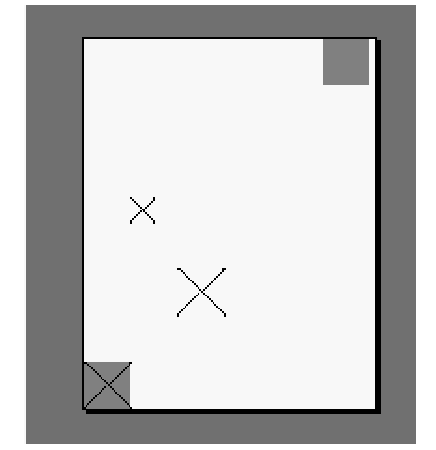

Basic Features¶
This chapter describes the basic pdfmark features. In general, the key–value pairs used as arguments for pdfmark follow closely the key–value pairs that appear in the PDF file. For a description of the PDF file format, see the PDF Reference .
The following features are described in this chapter:
Other pdfmark features are defined in other chapters of this document.
Annotations (ANN)¶
PDF supports several types of annotations. The properties of each annotation are specified in an annotation dictionary containing various key–value pairs. The PDF Reference describes all the types of annotations, and their required and optional dictionary entries.
The pdfmark operator using the feature name ANN is used to specify an annotation in a PostScript file. The general syntax is as follows:
[ /Rect [
xll yll xur yur
]
/Subtype
name
…Optional key–value pairs…
/ANN pdfmark
The following table describes the two required keys for annotations.
Required annotation keys
Key |
Type |
Semantics |
Rect |
array |
An array of four numbers [ xll yll xur yur ] specifying the lower-left x, lower-left y, upper-right x, and upper-right y coordinates—in user space—of the rectangle defining the open note window or link button. |
Subtype |
name |
The annotation’s PDF subtype. If omitted, the value defaults to |
As of PDF 1.3, the following annotation types are supported:
Value of subtype key |
Description |
Circle |
Circle annotation |
FileAttachment |
File attachment annotation |
FreeText |
Free text annotation |
Highlight |
Highlight annotation |
Ink |
Ink annotation |
Line |
Line annotation |
Link |
Link annotation |
Movie |
Movie annotation |
Popup |
Pop-up annotation |
Sound |
Sound annotation |
Square |
Square annotation |
Stamp |
Rubber stamp annotation |
StrikeOut |
Strikeout annotation |
Text |
Text annotation (note) |
TrapNet |
Trap network annotation |
Underline |
Underline annotation |
Widget |
Widget annotation |
Each type has its own set of key-value pairs that can be specified, as described in the PDF Reference. Future versions of PDF may introduce new types.
In addition to these types, annotations with unrecognized Subtype values, called custom annotations, are supported. Custom annotations can contain, in addition to the Rect and Subtype keys, arbitrary key-value pairs.
Custom annotation
[/Rect [ 400 435 500 535 ]
/Subtype /ADBETest_DummyType
/ADBETest_F8Array [ 0 1 1 2 3 5 8 13 ]
/ANN pdfmark
When viewed with Acrobat Viewer, this annotation appears with an unknown annotation icon.
The following table lists optional keys that are common to all annotations. Specific annotation types have additional keys that they use. See the PDF Reference for complete information.
Optional annotation keys
Key |
Type |
Semantics |
Action(PDF key = |
name or dictionary |
An action to be performed when the annotation is activated. See Actions for details. For links, this key is not permitted if the |
AP |
dictionary |
An appearance dictionary specifying how the annotation is presented visually. See the PDF Reference for details. |
AS |
name |
The annotation’s appearance state. See the PDF Reference for details. |
Border |
array |
The link’s border properties. If If it is of the form [ bx by c [d] ], the fourth element ( d ) is a dash array that specifies the lengths of dashes and gaps in the link’s border. The default value for |
Color(PDF key = |
array |
A color value used for the background of the annotation’s icon when closed; the title bar of the annotation’s pop-up window; and the border of a link annotation. The value is an array containing three numbers (red, green, and blue), each of which must be between 0 and 1, inclusive, specifying a color in the DeviceRGB color space. (See the PDF Reference for a description of this color space.) If omitted, a default color is used. |
F |
integer |
A set of flags specifying various characteristics. See the PDF Reference for details . |
ModDate(PDF key = |
string |
The date and time the note was last modified. It should be of the form: ( D:YYYYMMDDHHmmSSOHH’mm’ ) D: is an optional but strongly recommended prefix. YYYY is the year. All fields after the year are optional. MM is the month (01-12), DD is the day (01-31), HH is the hour (00-23), mm are the minutes (00-59), and SS are the seconds (00-59). The remainder of the string defines the relation of local time to GMT. O is either + for a positive difference (local time is later than GMT) or - (minus) for a negative difference. HH’ is the absolute value of the offset from GMT in hours, and mm’ is the absolute value of the offset in minutes. If no GMT information is specified, the relation between the specified time and GMT is considered unknown. Regardless of whether or not GMT information is specified, the remainder of the string should specify local time |
SrcPg |
integer |
The sequence number of the page on which the annotation appears. (The first page in a document is always page 1.) If this key is used, the pdfmark can be placed anywhere in the PostScript language file. If omitted, the pdfmark must occur within the PostScript language description for the page on which the annotation is to appear. |
Title(PDF key = |
string |
The text label to be displayed in the title bar of the annotation’s pop-up window when open and active The encoding and character set used is either PDFDocEncoding (as described in the PDF Reference ) or Unicode. If Unicode, the string must begin with <FEFF>. For example, the string “ABC” is represented as (ABC) in PDFDocEncoding and <FEFF004100420043> in Unicode. |
Text annotations (notes) and Links describe the syntax for two of the original and most commonly used annotation types in more detail.
Text annotations (notes)¶
Notes are known as text annotations in PDF. The syntax for creating a note is as follows:
[ /Contents string
/Rect [xll yll xur yur]
/SrcPg pagenum
/Open boolean
/Color array
/Title string
/ModDate datestring
/Name name
/Subtype /Text
/ANN pdfmark
In addition to the keys described in the tables Required annotation keys and Optional annotation keys, the keys specific to text annotations are listed in the following table. In addition to these keys, notes may also specify arbitrary key–value pairs.
Keys specific to text annotations
Key |
Type |
Semantics |
Contents |
string |
Required. Contains the note’s text string. The maximum length of the |
Open |
Boolean |
Optional. If true , the note is open (that is, the text is visible). If false (the default if omitted), the note is closed (that is, displayed as an icon). |
Name |
name |
Optional. The name of an icon to be used in displaying the note. The values are: |
The following examples demonstrate the use of notes.
Text annotation
[ /Contents (My unimaginative contents)
/Rect [400 550 500 650]
/Open false
/Title (My Boring Title)
% The following is private data. Keys within the private
% dictionary do not need to use the organization's prefix
% because the dictionary encapsulates them.
/ADBETest_MyInfo
<<
/Routing [(Me) (You)]
/Test_Privileges << /Me /All /You /ReadOnly >>
>>
/ADBETest_PrivFlags 42
/ANN pdfmark
Simple note
[ /Rect [75 586 456 663]
/Contents (This is an example of a note. You can type text directly into a note or copy text from the clipboard.)
/ANN pdfmark
Fancy note
[ /Rect [75 425 350 563]
/Open true
/Title (John Doe)
/Contents (This is an example of a note. Here is some text after a forced line break.
This is another way to do line breaks.)
/Color [1 0 0]
/Border [0 0 1]
/ANN pdfmark
Private data in note
[ /Contents (My unimaginative contents)
/Rect [400 550 500 650]
/Open false
/Title (My Boring Title)
% The following is private data. Keys within the private
% dictionary do not need to use the organization's prefix
% because the dictionary encapsulates them.
/ADBETest_MyInfo
<<
/Routing [(Me) (You)]
/Test_Privileges << /Me /All /You /ReadOnly >>
>>
/ADBETest_PrivFlags 42
/ANN pdfmark
Links¶
A link annotation represents either a hypertext link to a destination in the document, or an action to be performed.
The usual syntax for creating a link is as follows:
[/Rect [
xll yll xur yur
]
/Border [
bx by c [d]
]
/SrcPg
pagenum
/Color
array
/Subtype /Link
… Action-or-destination-specifying key–value pairs …
/ANN pdfmark
In addition to the keys described in the tables Required annotation keys and Optional annotation keys, a link may also contain keys specifying destinations or actions, described in Actions and Destinations.
The following examples demonstrate the use of links.
Link annotation
[ /Rect [70 550 210 575]
/Border [0 0 2 [3]]
/Color [0 1 0]
/Page /Next
/View [/XYZ -5 797 1.5]
/Subtype /Link
/ANN pdfmark
Simple link (old style, compatible with all Distiller application versions)
[ /Rect [70 650 210 675]
/Page 3
/View [/XYZ -5 797 1.5]
/LNK pdfmark
Simple link
[ /Rect [70 650 210 675]
/Border [16 16 1]
/Color [1 0 0]
/Page 1
/View [/FitH 5]
/Subtype /Link
/ANN pdfmark
Fancy link
[ /Rect [70 550 210 575]
/Border [0 0 2 [3]]
/Color [0 1 0]
/Page /Next
/View [/XYZ -5 797 1.5]
/Subtype /Link
/ANN pdfmark
Link that launches another file
[ /Rect [70 600 210 625]
/Border [16 16 1]
/Color [0 0 1]
/Action /Launch
/File (test.doc)
/Subtype /Link
/ANN pdfmark
Custom link action (URI link for the Acrobat WebLink plug-in)
[ /Rect [50 425 295 445]
/Action << /Subtype /URI /URI (http://www.adobe.com) >>
/Border [0 0 2]
/Color [.7 0 0]
/Subtype /Link
/ANN pdfmark
% Equivalent link using Launch action
[ /Rect [50 425 295 445]
/Action /Launch
/Border [0 0 2]
/Color [.7 0 0]
/URI (http://www.adobe.com)
/Subtype /Link
/ANN pdfmark
% URI link with a named destination
[ /Rect [50 425 295 445]
/Action << /Subtype /URI /URI (http://www.adobe.com#YourDestination) >>
/Border [0 0 2]
/Color [.7 0 0]
/Subtype /Link
/ANN pdfmark
Custom link action (named action)
% Link with a named action—executes a menu item
[ /Rect [50 425 295 445]
/Action << /Subtype /Named /N /GeneralInfo >>
/Border [0 0 2]
/Color [.7 0 0]
/Subtype /Link
/ANN pdfmark
Other annotations¶
A number of other annotation types are available. For example, consider the following movie annotation.
Movie annotation
[ /Subtype /Movie
/Rect [ 216 503 361 612 ]
/T (Title)
/F 1
% The specified file may be a movie or sound file
% Add your movie in place of "(/Disk/moviefile)"
/Movie << /F (/Disk/moviefile) /Aspect [ 160 120 ] >>
/A << /ShowControls true >>
/Border [0 0 3]
/C [0 0 1]
/ANN pdfmark
For a complete list of available annotation types, see PDF annotation types.
One useful type of annotation is the widget annotation. Widgets are used by PDF interactive forms to represent the appearance of fields and to manage user interactions. See the PDF Reference for detailed information on using interactive forms.
For examples of using widget annotations to create interactive forms, see Define the Widget annotations, which are also field dictionaries for this form.
The following example appears with an unknown annotation icon in the Acrobat viewers, because they do not know how to interpret this annotation type.
Custom annotation type
[ /Rect [400 435 500 535]
/Subtype /ADBETest_DummyType
/ADBETest_F8Array [0 1 1 2 3 5 8 13]
/ANN pdfmark
Articles (ARTICLE)¶
Articles consist of a title and a list of rectangular areas called beads. Each bead is specified by the pdfmark operator in conjunction with the feature name ARTICLE . Beads are added to the article in the order that they are encountered in the PostScript language file.
The syntax for a bead pdfmark is as follows:
[ /Title
string
/Rect [
xll yll xur yur
]
/Page
pagenum
/ARTICLE pdfmark
Article bead attributes
Key |
Type |
Semantics |
Title |
string |
Required. The title of the article to which a bead belongs. The encoding and character set used is either PDFDocEncoding (as described in the PDF Reference) or Unicode. If Unicode, the string must begin with <FEFF>. For example, the Unicode string for (ABC) is <FEFF004100420043>. |
Rect |
array |
Required. An array of four numbers [xll, yll, xur, yur] specifying the lower-left x, lower-left y, upper-right x, and upper-right y coordinates—in user space—of the rectangle defining the bead. |
Page |
integer |
Optional. The sequence number of the page on which the bead is located. A bead pdfmark that contains the optional |
In addition to the keys listed in the preceding table, the first bead in an article can also specify arbitrary key–value pairs. Suggested keys are Subject , Author , and Keywords .
Note
Articles do not support dictionaries as values in arbitrary key–value pairs.
The following examples demonstrate the use of articles.
Article action
[ /Action /Article /Dest (Now is the Time)
/Title (Now is the Time)
/OUT pdfmark
Create text for the article “Now is the Time”
/Helvetica 12 selectfont
(Now is the Time (Article)) 230 690 moveto show
(Now is the time for all good men to come to the aid of their
country.) 230 670 moveto show
(Now is the time for all good people to come to the aid of their
country.) 230 655 moveto show
% ... additional text ...
(Click here to go to Adobe's Home Page on the Web) 55 430 moveto show
Article containing two beads
[ /Title (Now is the Time)
/Author (John Doe)
/Subject (Coming to the aid of your country)
/Keywords (Time, Country, Aid)
/Rect [ 225 500 535 705 ]
/Page 2
/ARTICLE pdfmark
[ /Title (Now is the Time)
/Rect [225 500 535 705]
/Page 3
/ARTICLE pdfmark
Bookmarks (OUT)¶
Bookmarks are known as outline items in PDF. They are specified by using the pdfmark operator with the feature name OUT .
The syntax for a bookmark pdfmark is as follows:
[ /Title
string
/Count
int
/Color
array
/F
integer
…Action-specifying key–value pairs…
/OUT pdfmark
Bookmark attributes
Key |
Type |
Semantics |
Title |
string |
Required. The bookmark’s text. The encoding and character set used is either PDFDocEncoding (as described in the PDF Reference) or Unicode. If Unicode, the string must begin with <FEFF>. For example, the Unicode string for (ABC) is <FEFF004100420043>. |
Count |
integer |
Required if the bookmark has subordinate bookmarks, omitted otherwise. This key’s absolute value is the number of bookmarks immediately subordinate—that is, excluding subordinates of subordinates. If the value is positive, the bookmark is open, revealing its subordinates; if negative, the bookmark is closed, hiding its subordinates.
|
Color |
array |
Optional. The bookmark’s color. The value is an array containing three numbers (red, green, and blue), each of which must be between 0 and 1, inclusive, specifying a color in the DeviceRGB color space. (See the PDF Reference for a description of this color space.) |
F |
integer |
Optional. The style of the bookmark. Four styles are implemented:
|
In addition to the keys listed in the table Bookmark attributes, a bookmark must contain key–value pairs that specify an action. See Actions and Destinations for more information.
The bookmark pdfmarks can begin anywhere in the PostScript language file. However, they must appear in sequential order.
Bookmark examples
[ /Count 2 /Page 1 /View [/XYZ 44 730 1.0] /Title (Open Actions) /OUT pdfmark
[ /Action /Launch /File (test.doc) /Title (Open test.doc) /OUT pdfmark
[ /Action /GoToR /File (test.pdf) /Page 2 /View [/FitR 30 648 209 761]
/Title (Open test.pdf on page 2) /OUT pdfmark
[ /Count 2 /Page 2 /View [/XYZ 44 730 1.0] /Title (Fixed Zoom) /OUT pdfmark
[ /Page 2 /View [/XYZ 44 730 2.0] /Title (200% Magnification) /OUT pdfmark
[ /Count 1 /Page 2 /View [/XYZ 44 730 4.0] /Title (400% Magnification)
/OUT pdfmark
[ /Page 2 /View [/XYZ 44 730 5.23] /Title (523% Magnification) /OUT pdfmark
[ /Count 3 /Page 1 /View [/XYZ 44 730 1.0] /Title (Table of Contents #1)
/OUT pdfmark
[ /Page 1 /View [/XYZ 44 730 1.0] /Title (Page 1 - 100%) /OUT pdfmark
[ /Page 2 /View [/XYZ 44 730 2.25] /Title (Page 2 - 225%) /OUT pdfmark
[ /Page 3 /View [/Fit] /Title (Page 3 - Fit Page) /OUT pdfmark
[ /Count -3 /Page 1 /View [/XYZ 44 730 1.0] /Title (Table of Contents #2)
/OUT pdfmark
[ /Page 1 /View [/XYZ null null 0] /Title (Page 1 - Inherit) /OUT pdfmark
[ /Page 2 /View [/XYZ null null 0] /Title (Page 2 - Inherit) /OUT pdfmark
[ /Page 3 /View [/XYZ null null 0] /Title (Page 3 - Inherit) /OUT pdfmark
[ /Count 1 /Page 0 /Title (Articles) /OUT pdfmark
[ /Action /Article /Dest (Now is the Time) /Title (Now is the Time) /OUT pdfmark
% Bookmark with color and style (new in Acrobat 5.0)
[ /Count 0
/Title (The Adobe home page)
/Action /Launch
/URI (http://www.adobe.com)
/C [1 0 0]
/F 3
/OUT pdfmark
% Bookmark with a URI as an action
[ /Count 0 /Title (The Adobe home page)
/Action << /Subtype /URI /URI (http://www.adobe.com)>> /OUT pdfmark
Document Info dictionary (DOCINFO)¶
A document’s Info dictionary contains key–value pairs that provide various pieces of information about the document. Info dictionary information is specified by using the pdfmark operator in conjunction with the name DOCINFO .
The syntax for specifying Info dictionary entries is as follows:
[ /Author
string
/CreationDate
string
/Creator
string
/Producer
string
/Title
string
/Subject
string
/Keywords
string
/ModDate
string
/DOCINFO pdfmark
All the allowable keys are strings, and they are all optional. In addition to the keys listed in the following table, arbitrary keys (which must also take string values) can be specified.
Info dictionary attributes
Key |
Type |
Semantics |
Author |
string |
Optional. The document’s author |
CreationDate |
string |
Optional. The date the document was created. See the description of the |
Creator |
string |
Optional. If the document was converted to PDF from another form, the name of the application that originally created the document |
Producer |
string |
Optional. The name of the application that converted the document from its native form to PDF. Note Distiller ignores the setting of this attribute. |
Title |
string |
Optional. The document’s title. |
Subject |
string |
Optional. The document’s subject. |
Keywords |
string |
Optional. Keywords relevant for this document. These are used primarily in cross-document searches. |
ModDate |
string |
Optional. The date and time the document was last modified. It should be of the form: ( D:YYYYMMDDHHmmSSOHH’mm’ ) D: is an optional prefix. YYYY is the year. All fields after the year are optional. MM is the month (01-12), DD is the day (01-31), HH is the hour (00-23), mm are the minutes (00-59), and SS are the seconds (00-59). The remainder of the string defines the relation of local time to GMT. O is either + for a positive difference (local time is later than GMT) or - (minus) for a negative difference. HH’ is the absolute value of the offset from GMT in hours, and mm’ is the absolute value of the offset in minutes. If no GMT information is specified, the relation between the specified time and GMT is considered unknown. Regardless of whether or not GMT information is specified, the remainder of the string should specify the local time. |
Info dictionary pdfmarks can occur anywhere in the PostScript language file.
Info dictionary
[ /Title (My Test Document)
/Author (John Doe)
/Subject (pdfmark 3.0)
/Keywords (pdfmark, example, test)
/Creator (Hand programmed)
/ModificationDate (D:19940912205731)
/ADBETest_MyKey (My private information)
/DOCINFO pdfmark
Document open options (DOCVIEW)¶
A PDF file can specify the following to determine what happens when it is opened:
The way the document is displayed. The options are: the document only, the document plus thumbnail images, the document plus bookmarks, or just the document in full screen mode.
A location other than the first page that is to be displayed.
An optional action that occurs.
The above information is contained in key–value pairs in the document’s Catalog dictionary. This information can be set using the pdfmark operator in conjunction with the name DOCVIEW .
The syntax for specifying Catalog dictionary entries is as follows:
[ /PageMode name
…Action-specifying key–value pairs…
/DOCVIEW pdfmark
The PageMode key specifies how the document is to be displayed when opened. It can take the following values:
UseNone — Open the document, displaying neither bookmarks nor thumbnail images.
UseOutlines — Open the document and display bookmarks.
UseThumbs — Open the document and display thumbnail images.
FullScreen — Open the document in full screen mode.
If PageMode is not specified, the value defaults to UseNone .
The DOCVIEW pdfmark can also specify a destination (a page to which the document should be opened) or an action, by using additional key–value pairs. See Actions and Destinations for details about the key–value pairs that can be used.
DOCVIEW pdfmarks can occur anywhere in the PostScript language file.
File Open action
[ /PageMode /UseOutlines
/Page 2 /View [/XYZ null null null]
/DOCVIEW pdfmark
Embedded file content (EMBED)¶
The pdfmark feature EMBED enables the embedding of file content into a PDF document.
The syntax for specifying EMBED dictionary entries is as follows:
[ /Name (Unicode Name)
/FS << /Type /Filespec /F (name) /EF << /F {streamName} >> >>
EMBED pdfmark
The EMBED pdfmark directs Adobe Distiller to embed files in the EmbeddedFiles dictionary of the PDF document’s name tree. The following PDF segment is an example of an EmbeddedFiles dictionary.
<< /Type /Catalog % The catalog dictionary
/Names % The name dictionary
<< /EmbeddedFiles % One particular name tree
<< /Names % The name tree node
[
(Unicode Name) % Unique Unicode string used for Acrobat access
<< % The file specification dictionary
/F (name) % The file name for export
/EF << ... >> % Embedded file stream dictionary
>>
]
>>
>>
>>
For example:
[ /NamespacePush pdfmark
[ /_objdef {fstream} /type /stream /OBJ pdfmark
[ {fstream} << /Type /EmbeddedFile >> /PUT pdfmark
[ {fstream} (Simulating file content here) /PUT pdfmark
[ /Name (
Unicode Unique Name
)
% e.g., <feff 0041 0073> is Unicode for "As"
/FS <<
/Type /Filespec
/F (myfile.txt)
/EF << /F {fstream} >>
>>
/EMBED pdfmark
[ {fstream} /CLOSE pdfmark
[ /NamespacePop pdfmark
Distiller command line options to enable file embedding¶
Acrobat Distiller 8.1 and later permit PostScript operators to access only font files, char map files, and files within the installation directory. In contrast, Acrobat Distiller 8.0 and earlier permit unlimited file access. This change was introduced to address security concerns.
To reflect the change in file access behavior, the Distiller command line option (Windows and UNIX ) or user preference (Mac) related to file embedding were also reversed, but in the opposite direction. In Acrobat Distiller 8.1 and later, these Distiller command line options enable unlimited file access, overriding the normal mode of restricting file access. In Acrobat Distiller 8.0 and earlier, these command line options specified limited file access (restricted to fonts, char map files, and files within the installation directory), overriding the normal mode of unrestricted file access.
To use the EMBED pdfMark directive to embed files other than fonts and char maps, follow these version-specific guidelines on invoking Acrobat Distiller:
Acrobat Distiller 8.1 and later: Include the Distiller command line option (Windows and UNIX ) or user preference (Mac) that enables unlimited file access. You should be aware that such unlimited access can pose security problems. The following Windows command line invokes Acrobat Distiller with the option that specifies unlimited file access.
acrodist -F MyFileContainingPDFMarkEMBED.ps
Acrobat Distiller 8.0 and earlier: Omit the file-embedding Distiller command line option (Windows and UNIX ) or user preference (Mac) that restricts unlimited file access. The following Windows command line invokes Acrobat Distiller. The omission of the -F command line option specifies unlimited file access.
acrodist MyFileContainingPDFMarkEMBED.ps
To summarize, in 8.0 and earlier the command line switch “restricts” unlimited file access. In 8.1 and later the command line switch “enables” unlimited file access.
For information on the file-embedding Distiller command line option (Windows and UNIX ) and user preference (Mac), see ` <../DistillerAPIReference/Distiller_AutomationIntro.html#90081>`__.
Graphics encapsulation (BP, EP, SP)¶
Distiller allows a PostScript language program to specify that a given set of graphical operations should be encapsulated and treated as a single object. The pdfmark features BP (Begin Picture) and EP (End Picture) enclose a set of graphic operations. The SP (Show Picture) pdfmark indicates where to insert an object (which may be inserted in more than one place).
The syntax for the graphics encapsulation commands is as follows:
[ /_objdef {objname} /BBox [xll yll xur yur] /BP pdfmark
... page marking instructions ...
[ /EP pdfmark
[ {objname} /SP pdfmark
The _objdef {objname} key–value pair in the BP pdfmark names the picture objname. Any subsequent pdfmark can refer to this object.
Note
Graphics names are in the namespace governed by NamespacePush and NamespacePop , defined in Namespaces.
The BBox key is an array of four numbers [xll, yll, xur, yur] specifying the lower-left x, lower-left y, upper-right x, and upper-right y coordinates—in user space—of the rectangle defining the graphic’s bounding box.
When Distiller sees a BP pdfmark , it forks the distillation from the current context and distills subsequent graphics into a PDF Form object. When it encounters an EP pdfmark, Distiller finishes the Form object, and distillation continues in the original context. BP and EP pdfmark operators can be nested.
The SP pdfmark tells Distiller to insert a use of a named picture in the current context—in the same manner as if it were a cached PostScript form painted with the execform PostScript language operator. It includes the picture in the current context (page, form, and so forth) using the current transformation matrix (CTM) to position the graphic.
In addition to using SP to insert pictures, other pdfmark features that allow specifying named objects can add pictures built using BP and EP to a page.
The following examples demonstrate graphic encapsulation.
Creating a picture
This PostScript language sample draws a gray rectangle, then builds a picture enclosed by the BP and EP pdfmarks. The picture is simply an X. It shows the picture in three places on the page using the SP pdfmark, then draws another gray rectangle.
% draw a gray rectangle
0.5 setgray
0 0 100 100 rectfill
% create a picture
[ /BBox [0 0 100 100] /_objdef {MyPicture} /BP pdfmark
0 setgray
0 0 moveto 100 100 lineto stroke
100 0 moveto 0 100 lineto stroke
[ /EP pdfmark
% make the picture appear on the page
[ {MyPicture} /SP pdfmark
% make the picture appear in another place on the page
gsave
200 200 translate
[ {MyPicture} /SP pdfmark
grestore
% make the picture appear in another place on the page at a different size
gsave
100 400 translate
.5 .5 scale
[{MyPicture} /SP pdfmark
grestore
% draw another gray rectangle
0.5 setgray
512 692 100 100 rectfill showpage
The resulting page stream in the PDF file contains the following:
0.5 g
0 0 100 100 re f
q 1 0 0 1 0 0 cm /Fm1 Do Q
q 1 0 0 1 200 200 cm /Fm1 Do Q
q 0.5 0 0 0.5 100 400 cm /Fm1 Do Q
512 692 100 100 re f
The graphics between the BP and the EP pdfmarks have been saved in a Form object, which has this stream:
0 g
0 0 m
100 100 l
100 0 m
0 100 l
S
The resulting page looks like this:
Using BP and EP pdfmarks to define button faces for forms
Even if you define the pdfmark operator so that a PostScript interpreter ignores any text between a mark and a pdfmark, any PostScript operators between the BP and EP pdfmarks are still processed. To avoid printing anything between the BP and EP pdfmarks, use a conditional construct like the one shown in this example.
This code defines common objects that can be used by widgets for forms.
% AcroForm Begin
[ /BBox [0 0 100 100] /_objdef {Check} /BP pdfmark
{0 0 1 setrgbcolor /ZapfDingbats 119 selectfont 0 7 moveto (4) show}
?pdfmark
[ /EP pdfmark
[ /BBox [0 0 100 100] /_objdef {Cross} /BP pdfmark
{0 0 1 setrgbcolor /ZapfDingbats 119 selectfont 9.7 7.3 moveto (8) show}
?pdfmark
[ /EP pdfmark
% Up/Down button appearances
[ /BBox [0 0 200 100] /_objdef {Up} /BP pdfmark
{
0.3 setgray 0 0 200 100 rectfill 1 setgray 2 2 moveto
2 98 lineto 198 98 lineto 196 96 lineto 4 96 lineto 4 4 lineto fill
0.34 setgray 198 98 moveto
198 2 lineto 2 2 lineto 4 4 lineto 196 4 lineto 196 96 lineto fill
0 setgray 8 22.5 moveto 1 0 0 setrgbcolor /Helvetica 72 selectfont (Up) show
}
if
[ /EP pdfmark
[ /BBox [0 0 200 100] /_objdef {Down} /BP pdfmark
{
0.7 setgray 0 0 200 100 rectfill 1 setgray 2 2 moveto
2 98 lineto 198 98 lineto 196 96 lineto 4 96 lineto 4 4 lineto fill
0.34 setgray 198 98 moveto
198 2 lineto 2 2 lineto 4 4 lineto 196 4 lineto 196 96 lineto fill
0 setgray 8 22.5 moveto 0 0 1 setrgbcolor /Helvetica 72 selectfont (Down) show
}
?pdfmark
[ /EP pdfmark
% Submit button appearances
[ /BBox [0 0 250 100] /_objdef {Submit} /BP pdfmark
{
0.6 setgray 0 0 250 100 rectfill 1 setgray 2 2 moveto
2 98 lineto 248 98 lineto 246 96 lineto 4 96 lineto 4 4 lineto fill
0.34 setgray 248 98 moveto
248 2 lineto 2 2 lineto 4 4 lineto 246 4 lineto 246 96 lineto fill
/Helvetica 76 selectfont 0 setgray 8 22.5 moveto (Submit) show
}
?pdfmark
[ /EP pdfmark
[ /BBox [0 0 250 100] /_objdef {SubmitP} /BP pdfmark
{
0.6 setgray 0 0 250 100 rectfill 0.34 setgray 2 2 moveto
2 98 lineto 248 98 lineto 246 96 lineto 4 96 lineto 4 4 lineto fill
1 setgray 248 98 moveto
248 2 lineto 2 2 lineto 4 4 lineto 246 4 lineto 246 96 lineto fill
/Helvetica 76 selectfont 0 setgray 10 20.5 moveto (Submit) show
}
?pdfmark
[ /EP pdfmark
For more information on forms, see Structure examples. For the definition of ?pdfmark, see Usage with standard PostScript interpreters.
Marked content (MP, DP, BMC, BDC, EMC)¶
PDF 1.2 introduced marked content operators , which identify (mark) a portion of a PDF document as elements that can be processed by an application or plug-in.
Several pdfmark names can be used to specify marked content:
MPandDPdesignate a single marked-content point in the document’s content stream.BMC,BDC, andEMCbracket a marked-content sequence of objects in the content stream. These are complete graphics objects, not just a sequence of bytes.
Note
Marked content can also be used in conjunction with PDF’s logical structure facilities. See Logical Structure for information about pdfmark features that implement logical structure.
Marked-content points¶
MP creates a marked-content point in the PDF file. DP creates a marked-content point, with an associated property list. Their syntax is as follows:
[
tag
/MP pdfmark
[
tag
property-list
/DP pdfmark
The tag is an optional name object indicating the role or significance of the point. The property-list is a dictionary containing key-value pairs that are meaningful to the program creating the marked content.
Marked-content sequences¶
BMC and BDC begin a marked-content sequence, and EMC ends a sequence. Their syntax is as follows:
[
tag
/BMC pdfmark
[
tag
property-list
/BDC pdfmark
[ /EMC pdfmark
The tag is an optional name for the sequence. The property-list is a dictionary containing key-value pairs that are meaningful to the program creating the marked content.
Metadata (Metadata)¶
The ability to add metadata to the Catalog was added in Distiller 6.0. The syntax for the Metadata feature is as follows:
[ {Catalog} {
XMPStreamName
} /Metadata pdfmark
In future releases of Distiller, metadata may be attached to objects other than the Catalog object.
If the target is not the Catalog object or if DSC processing is enabled and this feature is located within Encapsulated PostScript (EPS), then this feature is ignored. Otherwise, the metadata associated with the stream XMPStreamName is added to the Catalog object with the key Metadata . See the PDF Reference for more information.
Metadata example
[ /_objdef {myMetadata} /type stream /OBJ pdfmark
[ {myMetadata} currentfile 0 (% -- end --) /SubFileDecode filter /PUT pdfmark
<?xpacket begin='' id='W5M0MpCehiHzreSzNTczkc9d'?>
<rdf:RDF xmlns:rdf='http://www.w3.org/1999/02/22-rdf-syntax-ns#'
...
% -- end --
[ {myMetadata} << /Type /Metadata /Subtype /XML>> /PUT pdfmark
[ {Catalog} {myMetadata} /Metadata pdfmark
Named images (NI)¶
The NI pdfmark gives a name to a PostScript image. Subsequently, the name can be used to refer to the image in the same way that a named object is referenced. For example, an image can be included in PDF logical structure with StOBJ (see StOBJ) so that it can be included later in element content. The example in Using OBJ and PUT pdfmarks to create an alternate image shows using NI with an alternate image.
The syntax for defining an image name is as follows:
[ /_objdef {
objname
}
/NI pdfmark
NI takes the standard _objdef key to name the image within Distiller. Image names are in the namespace governed by NamespacePush and NamespacePop , defined in Namespaces.
The image named by an NI command is to be found subsequently in the PostScript source file, but it does not need to immediately follow the NI . An image is assigned the name given by the most recent NI not yet paired with an image.
In other words, Distiller maintains a stack of names pushed by NI and popped by the occurrence of an image. If an image is encountered when this stack is empty, it is not an error: the image simply does not receive a name.
Page crops (PAGE, PAGES)¶
Page cropping is used to specify the dimensions of a page or pages in a PDF file that will be displayed or printed, without altering the actual data in the file. Cropping is specified by using the pdfmark operator with the names PAGE (for an individual page) or PAGES (for the entire document).
The syntax for specifying a non-default page cropping for a particular page in a document is as follows:
[ /CropBox [
xll yll xur yur
]
/PAGE pdfmark
The syntax for specifying the default page cropping for a document is as follows:
[ /CropBox [
xll yll xur yur
]
/PAGES pdfmark
The CropBox key is an array representing the location and size of the viewable area of the page. CropBox is an array of four numbers [xll, yll, xur, yur] specifying the lower-left x, lower-left y, upper-right x, and upper-right y coordinates—measured in default user space—of the rectangle defining the cropped page. The minimum allowed page size is .04 x .04 inch (3 x 3 units) and the maximum allowed page size is 200 x 200 inches (14,400 x 14,400 units) in the default user space coordinate system.
The PAGE pdfmark must be placed before the showpage operator for the page it is to affect. It is recommended that it be placed before any marks are made on the page. For example, it affects only the first page of a document if it is placed before any marks are made on the first page.
The PAGES pdfmark can be placed anywhere in the PostScript language program, but it is recommended that it be placed at the beginning of the file, in the Document Setup section between the document structuring comments %%BeginSetup and %%EndSetup , before any marks are placed on the first page.
Crop this page
% ...
[ /CropBox [0 0 288 288] /PAGE pdfmark
/Helvetica findfont 12 scalefont setfont
/DrawBorder
{
10 278 moveto 278 278 lineto 278 10 lineto
10 10 lineto closepath stroke
} bind def
%%EndSetup
%%Page: 1 1
DrawBorder
75 250 moveto (This is Page 3) show
75 230 moveto (Click here to go to page 1.) show
75 200 moveto (Click here to open test.doc.) show
Crop all pages
% ...
[ /CropBox [54 403 558 720] /PAGES pdfmark
/DrawBorder
{
58 407 moveto 554 407 lineto 554 716 lineto
58 716 lineto closepath stroke
} bind def
/Helvetica findfont 10 scalefont setfont
%%EndSetup
%%Page: 1 1
DrawBorder
75 690 moveto (This is Page 1) show
75 670 moveto (Below is a closed, default note created using pdfmark:) show
75 570 moveto (Below is an open note with a custom color and label:) show
400 670 moveto (Below is a closed note) show
400 655 moveto (containing private data:) show
400 570 moveto (Below is a custom annotation.) show
400 555 moveto (It should appear as an unknown) show
400 540 moveto (annotation icon:) show
Page label and plate color (PAGELABEL)¶
The PAGELABEL pdfmark allows specification of the page label for a given page. Page labels can be strings like “iv” or “3-24”, and do not necessarily correspond to the actual page numbers, which run consecutively. See the PDF Reference for details.
Its syntax is as follows:
[ /Label
string
/PlateColor
string
/PAGELABEL pdfmark
Both the Label and PlateColor keys are optional. Label takes a string representing the page label for the page on which the pdfmark appears.
PlateColor takes an optional string representing a device colorant. It is used in high-end printing situations where the pages are pre-separated prior to generating PDF. This means that there are multiple page objects in the PDF file (each representing a different colorant) corresponding to a single physical page.The color for each separation must be specified in a separation dictionary ; see the PDF Reference for details.
Consecutive pages that specify PlateColor , with the same value for Label , are placed in the same separation group. The last instance of a Label or PlateColor on a page overrides any earlier settings of the same key on the same page.
Page Label
%%Page: Sec1:2 1
%%PlateColor: Cyan
[ /Label (Sec1:1) /PlateColor (Cyan) /PAGELABEL pdfmark
%%Page: iii 3
[ /Label (iii) /PAGELABEL pdfmark
Transparency (SetTransparency)¶
PDF 1.4 extended the Adobe imaging model to include the notion of transparency. See the PDF Reference for complete information on transparency. To produce PDF files with transparency from PostScript files, use the SetTransparency pdfmark feature. This feature provides a mechanism for specifying the following graphics state parameters:
Graphics state parameters for transparency
Key |
Value |
Meaning |
AIS |
Boolean |
The alpha source flag (“alpha is shape”), specifying whether the current soft mask and alpha constant are to be interpreted as shape values ( |
BM |
name or array of names |
Current blend mode. Default is |
CA |
number |
Current stroking alpha constant, specifying the constant shape or constant opacity value to be used for stroking operations. Default is |
ca |
number |
Same as |
SMask |
dictionary or |
Current soft mask, specifying the mask shape or mask opacity values. Default is |
TK |
Boolean |
The text knockout flag, which determines the behavior of overlapping glyphs within a text object. Default is |
The syntax of the SetTransparency feature is as follows:
[
key–value pairs
/SetTransparency pdfmark
where recognized key-value pairs are found in the table Graphics state parameters for transparency.
Note
The keys used by this pdfmark feature are the same as are found in PDF documents.
The arguments to the SetTransparency feature are checked for correct types and values. Unrecognized keys are ignored and their values are neither checked nor written to the PDF document. If no recognized key-value pairs are presented, then this feature adds no transparency information to the PDF document.
The values set by this feature are subject to gsave/grestore . For example:
[ /ca .8 /SetTransparency pdfmark % Nonstroking alpha is now .8
gsave
[ /ca .7 /SetTransparency pdfmark % Nonstroking alpha is now .7
grestore
% Nonstroking alpha is now .8
The initgraphics operator resets all of the graphics state parameters for transparency to the defaults as shown in the table Graphics state parameters for transparency.
The following PostScript code demonstrates a use of the SetTransparency feature using Normal blend mode with differing opacities.
Transparencies
/DeviceCMYK setcolorspace 15 setlinewidth
[ /ca .6 /CA .3 /BM /Normal /SetTransparency pdfmark
0 1 1 0 setcolor 220 330 150 0 360 arc fill % red
0 0 1 0 setcolor 320 503 150 0 360 arc fill % yellow
1 1 0 0 setcolor 420 330 150 0 360 arc fill % blue
1 0 0 0 setcolor 230 440 104 0 360 arc stroke % cyan
0 1 0 0 setcolor 410 440 104 0 360 arc stroke % magenta
0 0 1 0 setcolor 320 284 104 0 360 arc stroke % yellow
Compare this to the following in which the blend mode has been changed:
/DeviceCMYK setcolorspace 15 setlinewidth
[ /ca .6 /CA .3 /BM /Difference /SetTransparency pdfmark
0 1 1 0 setcolor 220 330 150 0 360 arc fill % red
0 0 1 0 setcolor 320 503 150 0 360 arc fill % yellow
1 1 0 0 setcolor 420 330 150 0 360 arc fill % blue
1 0 0 0 setcolor 230 440 104 0 360 arc stroke % cyan
0 1 0 0 setcolor 410 440 104 0 360 arc stroke % magenta
0 0 1 0 setcolor 320 284 104 0 360 arc stroke % yellow
Note that filling and stroking the same path results in the use of the PDF f and S operators and not the B operator. This produces a “double border” effect and is not usually desirable.
/DeviceCMYK setcolorspace 15 setlinewidth
[ /ca .6 /CA .3 /BM /Normal /SetTransparency pdfmark
0 1 1 0 setcolor 220 330 150 0 360 arc % red path
gsave fill grestore stroke % fill, then stroke
0 0 1 0 setcolor 320 503 150 0 360 arc % yellow path
gsave fill grestore stroke % fill, then stroke
1 1 0 0 setcolor 420 330 150 0 360 arc % blue path
gsave fill grestore stroke % fill, then stroke
Transparency group XObject and soft mask¶
To specify a soft mask dictionary in a graphics state, it is necessary to define and access a transparency group XObject—a form XObject with a Group entry.
See the PDF Reference for complete information.
Transparency group XObject¶
There are two PostScript idioms that create a Form XObject with Distiller: the execform operator and the BP pdfmark feature. In Distiller 6.0 and later, each of these recognize the Group key that is used to indicate a transparency group. Two forms with differing Group content are considered to be different. The syntax for these two idioms are:
<< /FormType 1
/BBox [xll yll xur yur]
/Group
group-dictionary
...
>>
[ /_objdef {myForm}
/BBox [xll yll xur yur]
/Group
group-dictionary
...
/BP pdfmark
Soft mask dictionaries¶
Because Distiller is configured to use execform (not /Form defineresource ), there is no direct way for Distiller to access a PostScript form dictionary if it is not used by execform . But a form used by execform will always leave marks on the page. So the way to create a soft mask dictionary is to create a transparency group form XObject using the BP pdfmark feature, then to refer to this form in the soft mask dictionary in the Graphics state. For example:
[ /_objdef {myForm} % Name to be used by G in Soft Mask below
/BBox [
xll yll xur yur
]
/Group
dict
/BP pdfmark
...
define the shapes here
/EP pdfmark
% Set the soft mask in Graphics state
[ /SMask << /S /Alpha /G {myForm} >> /SetTransparency pdfmark
Here is another example.
Soft mask dictionaries
280 0 translate
/DeviceCMYK setcolorspace
% Draw the background...
0 0 0 0.2 setcolor 10 540 100 200 rectfill
1 1 1 0 setcolor 10 540 200 200 rectstroke
% Define the form...
[ /_objdef {aForm} /BBox [ 10 540 210 740]
/Group << /S /Transparency /K true>> /BP pdfmark
/DeviceCMYK setcolorspace
0.14 0.85 0.77 0.03 setcolor 72 600 50 0 360 arc fill
0.12 0.02 0.78 0 setcolor 110 650 50 0 360 arc fill
0.93 0.69 0.07 0.01 setcolor 147 600 50 0 360 arc fill
[ /EP pdfmark
% Draw the form...
gsave
[ /ca 0.5 /BM /Normal /SetTransparency pdfmark
[ {aForm} /SP pdfmark
grestore
% Use the Form as Soft Mask...
[ /SMask << /S /Alpha /G {aForm} >> /SetTransparency pdfmark
...
Soft mask images¶
There are two ways to specify a soft mask in PDF: a soft-mask dictionary in the Graphics state as described above, and a soft-mask image associated with another image XObject (as an SMask entry).
A soft-mask image XObject has the same entries as an ordinary image XObject, with some restrictions:
ColorSpacemust beDeviceGray.Matteis an array of component values in the color space of the parent image.WidthandHeightmust be the same as in the parent image ifMatteis present.ImageMaskmust befalseor absent.MaskandSMaskmust be absent.BitsPerComponentis required.
Distiller has a mechanism for naming and identifying image objects using the NI pdfmark feature. To support soft masks, NI also recognizes three additional entries: IsSoftMask , Matte , and SMask .
NI pdfmark
Key |
Value |
Comments |
/_objdef |
{nameobject} |
A name object assigned to the next image. |
IsSoftMask |
Boolean |
Default is |
Matte |
array |
Array of component values specifying matte color with which the parent image data has been pre-blended. |
SMask |
{SoftMaskImageName} |
{SoftMaskImageName} must be defined already by another |
Using the NI pdfmark feature, you must define the soft-mask image first and then use it as the SMask entry for the parent image. For example:
Soft mask images
\[ /_objdef {mySoftMask}
% Name assigned to the next image.
/SoftMask true % Next image {mySoftMask123} is a soft mask.
/Matte [.1 .2 .3]
/NI pdfmark
... define the soft mask image (ColorSpace must be /DeviceGray)
[ /_objdef {myImage}
% Name assigned to next image.
/SMask {mySoftMask} % Associate soft mask
{mySoftMask123}
/NI pdfmark
... define the image here
In this example, the image’s ColorSpace must have three components and the image data must be preblended with [.1 .2 .3] .